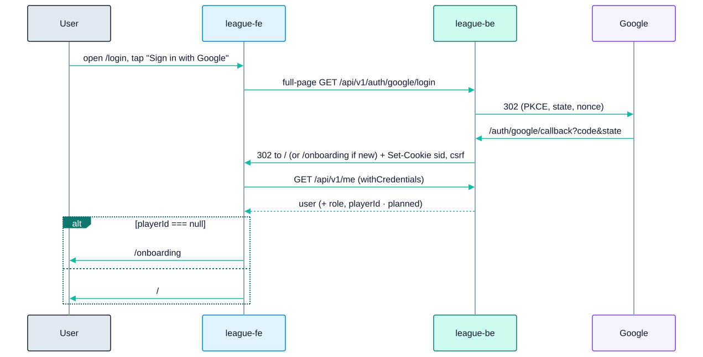

09 - Frontend Design (league-fe)
Repo: league-fe (GitHub mini-apps-org/league-fe). Tags 0.1.0–0.1.4.
Built live in
src/· Parked in_parked/(built, not compiled; restore per_parked/RESTORE.md) · Target
9.1 Stack (Built)
| Concern | Choice |
|---|---|
| App shape | Single Vite app (no monorepo / Turborepo). pnpm 10.15, Node ≥ 24 (.nvmrc) |
| UI | React 19.3, TypeScript ~6.0 (strict, noUncheckedIndexedAccess) |
| Build | Vite 8.3, dev server on port 5174. A production build fails if VITE_API_URL is unset |
| Styling | Tailwind 4.3 via @tailwindcss/vite (no config file), tokens in src/index.css |
| Components | shadcn CLI 4 (radix-nova style, neutral base, lucide icons), Radix UI, vaul (Drawer), sonner (toasts), next-themes (system/light/dark) |
| Server state | TanStack React Query 5 with queryOptions factories |
| Routing | react-router 7 (createBrowserRouter; never react-router-dom) |
| HTTP | axios (withCredentials) wrapped in BaseAPI |
| Validation | zod 4, used only by parked forms |
| i18n | i18next + react-i18next. en default/fallback, vi. Choice stored in localStorage.locale |
| Tests | Vitest 5, jsdom, Testing Library, MSW 3. No Playwright (ask before adding) |
| Quality | ESLint 9 flat config (typescript-eslint, react-hooks, jsx-a11y, tanstack-query, simple-import-sort), Prettier + tailwind plugin, husky (pre-commit lint-staged + typecheck; commit-msg commitlint; pre-push tests) |
| Not used | No zustand, react-hook-form or ky. The dependency list is closed; adding one needs approval |
9.2 Source tree
text
src/
├─ main.tsx # StrictMode › ThemeProvider › QueryClientProvider › RouterProvider + Toaster; registers SW
├─ api/ # the ONLY place that touches axios
│ ├─ axios.ts # instance, CSRF + 401 interceptors
│ ├─ baseAPI.ts # get/post/put/patch/delete, serializeParams, withQuery
│ ├─ endpoints.ts # ENDPOINTS, API_BASE
│ ├─ authAPI.ts # getGoogleSignInURL, fetchMe, logout
│ └─ leagueAPI.ts # 13 league endpoints (used by parked screens)
├─ queries/ # queryOptions factories: auth.ts ['auth','me'], members.ts ['members','preview',id]
├─ hooks/ # useMe/useLogout, useMemberPreview/useLinkMember, useRole/useIsAdmin, useLoginError
├─ lib/ # pure logic + tests: csrf, errors, member-id, navigate, query-client, register-sw, icons
├─ types/ # api.ts (ApiEnvelope<T>), auth.ts, errors.ts, league.ts (TEMPORARY hand-written)
├─ components/ # AppHeader, AppLayout, AppSkeleton, RequireAuth, ThemeToggle, UserAvatar,
│ ├─ auth/ # AppMark, GoogleMark, GoogleSignInButton, LegalLine, LegalPageLayout, MemberPreviewCard
│ ├─ league/ # SkillLevelSquare
│ └─ ui/ # shadcn-owned (avatar, button, card, dialog, drawer, dropdown-menu, input, label, select, skeleton, sonner, tabs, textarea, toggle, toggle-group)
├─ pages/ # auth/LoginPage, HomePage, OnboardingPage, RulesPage, PrivacyPage, NotFoundPage, RouteErrorPage
├─ router/index.tsx
├─ i18n/ # index.ts, en.json, vi.json, i18next.d.ts (vi must have every en key)
└─ test/ # setup.ts, server.ts (msw), handlers.ts, render.tsx (renderRoutes, renderWithProviders)
_parked/src/ # parked league screens, 17 components, RequireAdmin, useLeague*, lib/rules.ts, night.ts, schemas.ts, format.ts9.3 Conventions (from CLAUDE.md and .claude/rules/*)
| Area | Rule |
|---|---|
| Naming verbs | fetch* = HTTP, get* = sync read, use* = hook, handle* = handler inside a component, on* = handler prop. Constants are SCREAMING_SNAKE_CASE. Use domain words (put-up, night, race, skill level) |
| Size | Files ≤ 300 lines, functions ≤ 3 params, nesting ≤ 2. No boolean flag params |
| TypeScript | No enum (use as const / unions). import type. Block bodies with an explicit return; one-line arrows only as array callbacks |
| Modules | Named exports only. Sorted imports. Cross-folder imports via @/. No fetch/axios outside src/api. Business logic is pure functions in src/lib with a sibling test |
| React 19 | No forwardRef. <Ctx value> instead of .Provider. useOptimistic / useActionState / useFormStatus for mutations and forms. Effects only sync external systems. Server state stays in React Query, never copied to useState. React Compiler off; memoize only with a measured cost. One component per file |
| shadcn | components/ui is CLI-owned (pnpm dlx shadcn add), never hand-edited. Confirmations and panels are vaul Drawers, never window.confirm. Variants via cva, merge via cn. Semantic tokens only (no hex, lint-enforced). 44 px tap targets (size-11/h-11). Icons only through lib/icons.ts. No emoji |
| Copy | No hard-coded strings, including aria-label, placeholder, title and alt. Errors render apiError.<code> |
| Testing | Tests sit beside the code. Query by role → label → text. userEvent. renderWithProviders. Network mocked only with MSW; unhandled requests fail. Assert copy via i18next.t |
| Git | Conventional commits (commitlint). The agent never commits or pushes unless asked |
| TODOs | TODO(<Notion URL>) only |
9.4 Routes and screens
| Route | Screen | Access | Status | Notes |
|---|---|---|---|---|
/login |
Login | public (signed-in users redirect to /) |
Built | Full-page link to {VITE_API_URL}/api/v1/auth/google/login. Banner for ?error=cancelled|login_failed|server_error |
/onboarding |
Link member ID | session, no layout | Built UI / Planned API | Enter 8-digit member ID → GET /members/preview → MemberPreviewCard → POST /me/link |
/ |
Home → Schedule | session | Built placeholder / ParkedSchedulePage |
Season/division select, week chips, fixture cards (status badge, points) |
/matches/:id |
Team roster / night | session | ParkedMatchPage |
Both rosters (name, member ID, SL, MW/MP, points), 5-match scoresheet, night action bar |
/matches/:id/put-up |
Put-up | captain (own night) / admin | ParkedPutUpPage |
PutUpCandidateList with x/23 and block reasons |
/matches/:id/result/:order |
Enter result | captain (own night) / admin | ParkedResultPage |
Steppers for games (capped at race), innings, DS; ResultVerdict previews points via rules.ts; server value wins |
| (drawer) | Night summary & submit | captain / admin | ParkedSubmitNightSheet |
Team totals, submit |
/admin/players |
Admin players | admin (RequireAdmin) |
ParkedPlayersPage |
Search, SL change with reason (SkillLevelPanel), history, transfer, add paid member |
/rules, /privacy |
Legal | public | Built placeholder | |
* |
Not found | public | Built | |
| — | Profile (Stats / Teams / Tournaments) | session | Target Phase 2 | 04 §12, over player_division_stats |
| — | Standings | public | Target Phase 2 | Over team_standings |
| — | Coin flip, live scoring (Screen 5), verification | captain | Target Phase 2 | 08 |
Parked">4.1 MVP night flow (Parked)

_parked/src/lib/night.ts holds MATCHES_PER_NIGHT = 5, firstPutUpFor(order) (home puts up first on odd matches) and a nextAction state machine.
9.5 Auth client (Built)

- No token storage in JS. The session is the HttpOnly
sidcookie. The only value inlocalStorageislocale. - CSRF interceptor: on unsafe methods, read cookie
__Secure-csrf(prod) orcsrf(dev/staging) and sendX-CSRF-Token. - 401 interceptor:
window.location.assign('/login'), except for/meitself. There is no refresh flow. RequireAuth:useMe(retry: false). While pending it showsAppSkeleton; on error it navigates to/loginwithstate.from.playerId === null→/onboarding.- Logout:
POST /auth/logout→ clear the query cache →/login. - Errors:
toApiErrornormalizes toApiRequestError(status, code, message). An unknown code becomes50001; no response gives status 0. The UI showsmessageFor(err). - Query defaults: no retry on 4xx, up to 2 retries otherwise;
refetchOnWindowFocus: false; mutations never retry.
9.6 PWA (Built)
public/manifest.webmanifest: "Billiard League" / "Bida", standalone, portrait, theme#1F6FEB, icons 192/512/maskable.public/sw.js(production only, cachebida-static-v1): cache-first for/assets/*, icons and the manifest. It never caches HTML or/api/v1, so one user's signed-in page can't be shown to the next user on a shared club device.- Target Phase 2 offline scoring needs an IndexedDB event queue. The rule above still holds: cache app data in IndexedDB keyed by user, never in the HTTP cache.
9.7 Target Phase 2+ frontend additions
| Addition | Notes |
|---|---|
| Generated API types | openapi-typescript from league-be swagger (needs swagger 3 or a conversion step). Delete types/league.ts |
| Live scoring screens | Coin flip, lag, Screen 5 (turn over / DS / timeouts / 6 outcomes), offline queue. Needs a client state store; propose a dependency (e.g. zustand) for approval |
| Zalo Mini App build | Separate target or wrapper. Zalo login would need a backend identity provider beside Google |
| Language switcher | Keys exist; there is no UI yet. Consider vi as the default for the Vietnam launch |
| Playwright E2E | Two-captain night flow (ask before adding the dependency) |
| Profile and standings | Over the existing views |
9.8 Testing (Built)
| Level | Tooling | Current coverage |
|---|---|---|
| Unit | Vitest | lib/errors, lib/member-id; Parkedrules.test.ts, night.test.ts |
| Component | Testing Library + MSW | RequireAuth, OnboardingPage |
| Default MSW handlers | src/test/handlers.ts |
/me, logout, fixtures |
| E2E | — | Target Playwright |
CI (.github/workflows/ci.yaml) runs format:check, lint (zero warnings), typecheck, test and build on every PR to dev/master.